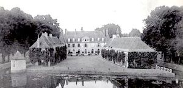
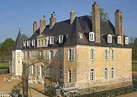
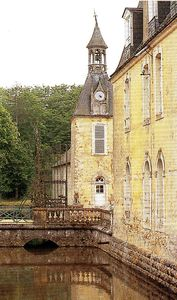
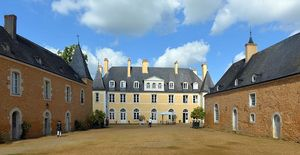
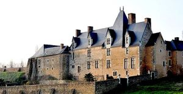
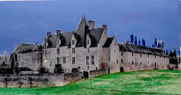
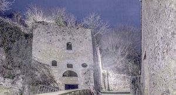

Recensement Jean-Claude Truffet
| Département | 72 — Sarthe |
| Canton | Sablé-sur-Sarthe |
| Commune | Avoise |
| Type d'édifice | Château |
| Période d'origine | XV-XVIII |
| Coordonnées GPS | 47° 52' 25" Nord, 0° 14' 07" Ouest |







Trois châteaux à Avoise dont Dobert, Perrine et St-Michel.
DOBERT, resté dans la même famille depuis la fin du XVe siècle, son importance apparait au XVIIIe siècle pris un aspect classique par l'initiative Alexandrine de Bastrard de Fontenay. Le village s'est développé en longueur, au pied d'un coteau sur la Sarthe, du XVe au XVIIIe siècle, à partir d'une motte du Xe au XIIIe siècle, au confluent de la Sarthe. A partir d'un édifice des XVe et XVIIe siècles, reconstruction du château au milieu du XVIIIe siècle. Quelques communs datent début du XIXe siècle. Une longue allée plantée dessert le château entre deux communs. Derrière le commun nord, se trouvent des bâtiments de ferme (colombier, grange, étable). Le château, de plan rectangulaire, est cantonné de tours rectangulaires étroites façade sur cour, et de deux ailes identiques façade sur jardin. La disposition interne du château a été habillée au XIXe siècle et seules subsistent quelques menuiseries du XVIIIe siècle. La chapelle est construite ou remaniée vers 1851, date portée; logement agricole du XVIe ou XVIIe siècle ; remanié aux XVIIIe et XIXe siècles ; orangerie et noria datent du XVIIIe siècle; communs, moulin, colombier, parties agricoles sont construits avant 1828 et remaniés au XIXe siècle, date portée 1833 ; jardin paysager réalisé au XIXe siècle ; aqueduc remanié vers 1840, daté par source, puis au début du XXe siècle. , Madame Hélène du Peyroux, location chambres d'hôtes de charme.
DOBERT pour les façades et toitures du château et des communs, les douves, l'aqueduc avec son système d'irrigation et l'allée plantée qui l'accompagne depuis l'est. Le château fait l'objet d'une inscription depuis le 24 juillet 1989. PERRINE, le manoir de la Perrine de Cry fut reconstruit après la guerre de Cent Ans et agrandi au XVIe siècle. Saisi pendant la Révolution, il fut réuni en 1829 au domaine du château de Dobert. Le manoir de la Perrine de Cry, inscrit par arrêté le 22 novembre 1993 La Vieille Tour, édifice fortifié inscrit par arrêté le 6 janvier 1926. SAINT-MICHEL, le village s'est développé en longueur, au pied d'un coteau sur la Sarthe, du XVe au XVIIIe siècle, à partir d'une motte du Xe au XIIIe siècle, au confluent de la Sarthe et du ruisseau des deux fonds et autour de l'église construite au moyen âge. Château-fort construit au XIIe ou XIIIe siècle, détruit en 1370. Le 29 octobre 1439, par lettres du Roi René de Sicile, duc d'Anjou et comte du Maine, permission avait été donnée de rebâtir le château de Pescheseul avec fosses, ponts levis, bastions, boulevards, canons et autres armes à repousser et assaillir pour le service du Roi. Château avec échauguette, enceinte et douves reconstruit pour Jean de Champagne par Jean Masneret et René Guitton entre 1483 et 1549. Détruit partiellement puis reconstruit; élévations, toit polygonal pour Tessier de la motte par l'architecte Moutier vers 1833. Partiellement remanié pour la comtesse de Breuil par l'architecte Pascal Vérité en 1908. Jardin paysager réalisé par André Leroy vers 1833, chapelle Saint-Michel et corps de passage sculpté élevés vers 1882. Orangerie et serres bâties vers 1884. Échauguette couverte d'un toit conique. Tours sur les angles du Logis couvertes de toits coniques, logis partiellement couvert d'un toit polygonal, corps de passage couvert en pavillon, chapelle voûtée d'ogives.
St-Michel Famille Jean de Champagne
"
Deux châteaux à Avoise dont Dobert grav 1-à-4, Perrine grav-5_6 et St-Michel grav-7. Dobert GPS : 47° 52' 25" Nord, 0° 14' 07" Ouest